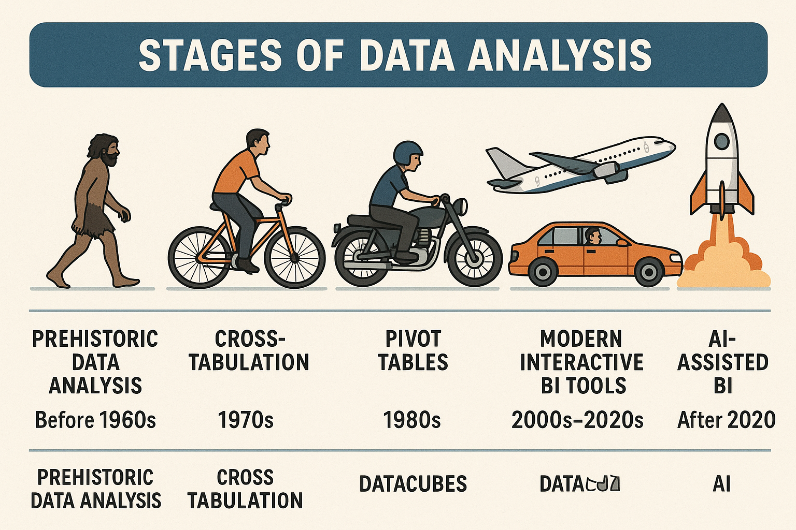

Five leaps, from hand-made summaries to insights that find you.
Real-world analogy
How we learned to find our way
Data analysis grew up the same way navigation did: from a paper map you read by hand to a voice that warns you before you hit traffic.
Cross tab
Pivot
Data cube
Interactive BI
AI-enabled BI
Paper map → Cross tab. A fixed grid you read by hand. New question? Draw a new map.
Atlas index → Pivot table. Look up what you need and jump straight to it.
Globe → Data cube. Every angle is pre-built. Just turn it.
Phone map → Interactive BI. Pinch, zoom and tap. You explore it yourself.
Voice GPS → AI-enabled BI. It warns you before you hit the jam.
Explain more01
Cross Tabs to Pivot Tables
Early analysis lived in static cross tabulations that compared two dimensions at a time. They established the foundation for structured thinking about measures versus categories, even if every new question meant rebuilding the summary by hand.
Cross Tabulation: Manual row-and-column layouts highlighted intersections like product by region, but flexibility was limited.
Pivot Table Revolution: Spreadsheet tools automated the reshaping, letting analysts drag fields, aggregate on the fly, and explore scenarios without rewriting queries.
Data Cubes: OLAP engines pre-calculated multi-dimensional aggregations so that thousands of pivot-table style combinations could be answered instantly.

02
Interactive BI to AI-Enabled Insights
As business questions grew broader, platforms layered richer interfaces and intelligence on top of cube technology. Modern BI removes the latency between curiosity and action by blending guided visuals with machine learning assistance.
BI Interactive Visualization: Dashboards and storytelling visuals invite stakeholders to slice, filter, and drill without waiting on IT.
AI-Enabled BI: Natural language queries, anomaly detection, and predictive insights surface patterns proactively so teams act before trends fade.